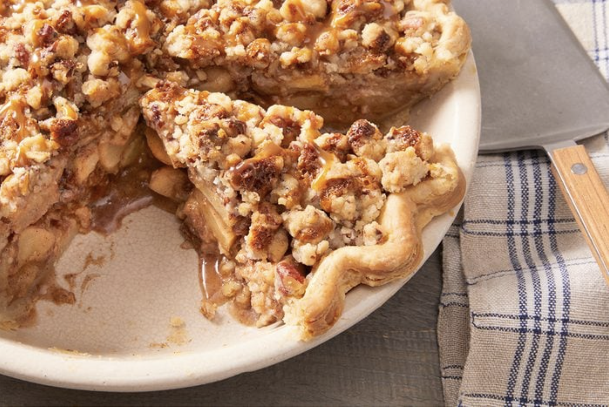
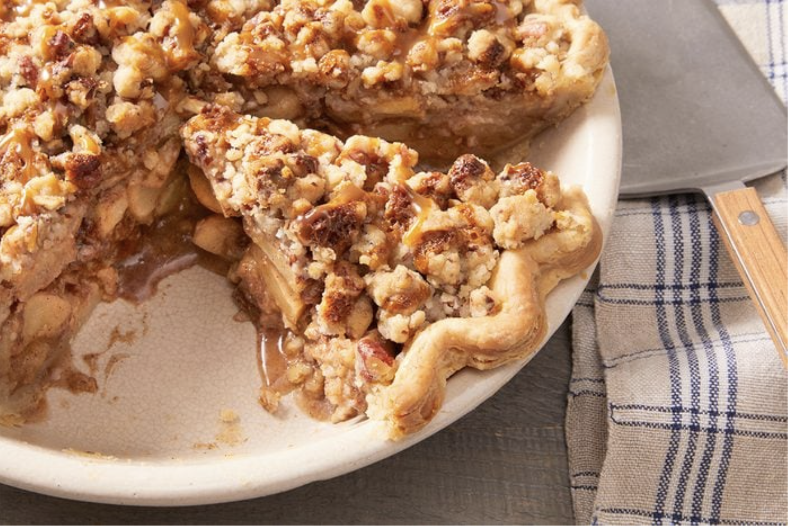
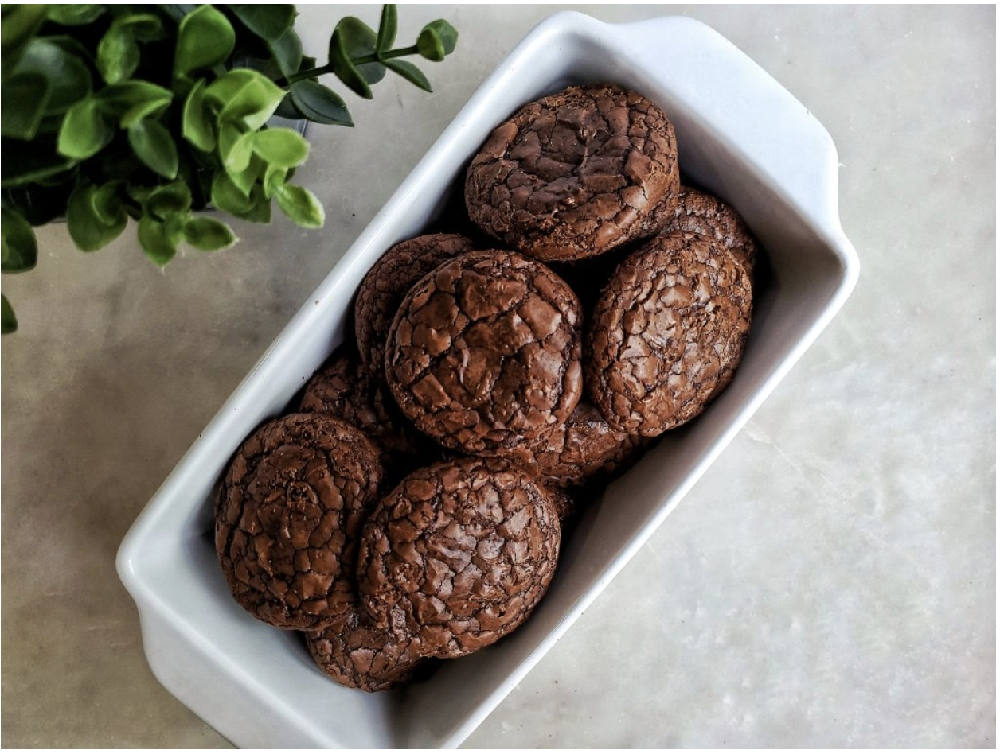
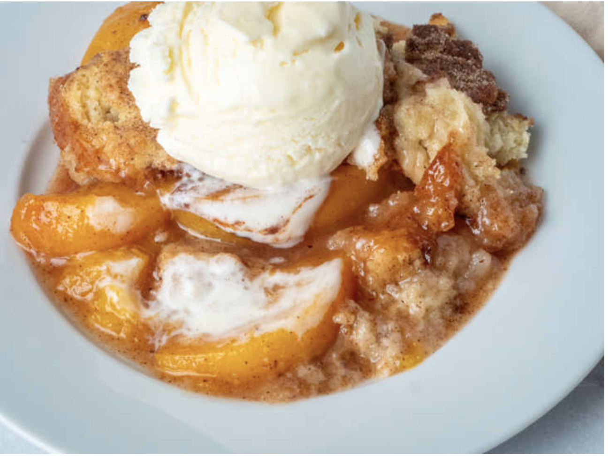

Apple Pie
Apple Pie is an American Classic, no matter what time of the year! There's something about the sweet smell of ciannamon paired with a scoop of vanilla ice cream that makes my day no matter what time of year it is.
Apple Pie is an American Classic, no matter what time of the year! There's something about the sweet smell of ciannamon paired with a scoop of vanilla ice cream that makes my day no matter what time of year it is.
Oh boy Brookies! Brookies are if brownies and cookies had a love child! The chewy texture of a bookie with the crispy top layer that is a classic brownie staple make me want to hurt someone! Hello milk man, when are you delivering again? 8am you say? PERFECT!
Next to the apple pie, the Peach Cobbler is just nostalgia! One of the first recipes my grandmother showed me how to make as a child! Simple recilpe that brings so much joy to the table, will always be an all time favorite!
